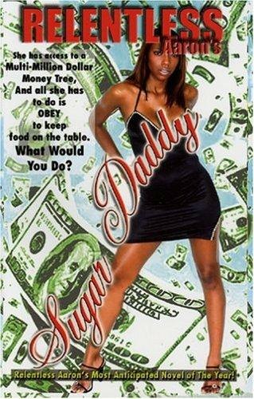

Relentless Library / The publication history of Sugar Daddy
Relentless Library · Publication history
The publication history of Sugar Daddy
Like several Relentless Aaron titles, Sugar Daddy appeared first under Relentless Content and later as a St. Martin’s paperback. The early dates in the files do not all agree, so this page lays the evidence out instead of smoothing it over.

RC copyright2005
Printed first PB lineJuly 2004
Open Library RC dateApril 30, 2005
St. Martin’sJune 3, 2008
The self-published trail
The excerpt on the box is a Relentless Content publication, with a Mount Vernon address, a 2005 copyright, and a first-trade-paperback line dated July 2004. Addall and Gale, in a prior Relentless catalog brief, also listed Sugar Daddy as 2005 under Relentless Content. Open Library’s RC record is April 30, 2005. Those three dates are close but not identical.
The national paperback
The St. Martin’s Paperbacks edition followed on June 3, 2008. That is the copy most current ISBN searches will surface. Relentless’s own later site writing still names Sugar Daddy among the early titles that reached a mainstream market.
Questions
Which year should a bibliography use?
List both issues: Relentless Content, 2004/2005 (dates conflict), and St. Martin’s Paperbacks, 2008. Do not collapse them into a single year.
Is the excerpt the full book?
No. The file on the box is an excerpt (sdexcerpt.pdf), not a complete sale file.